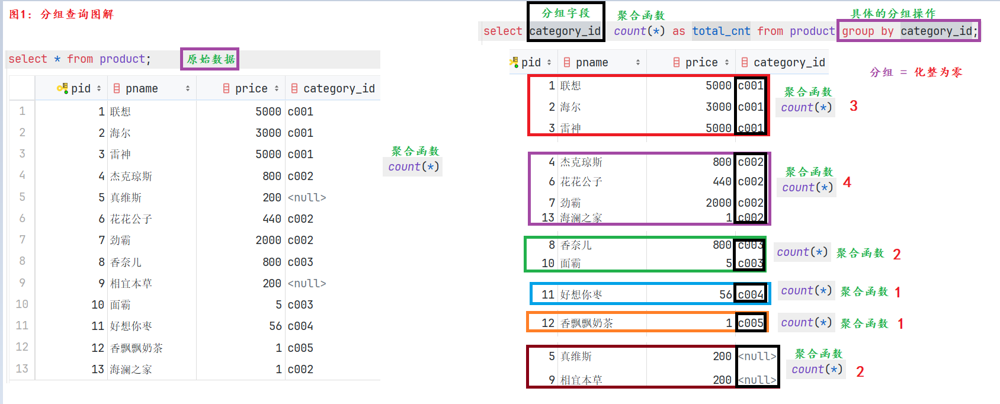
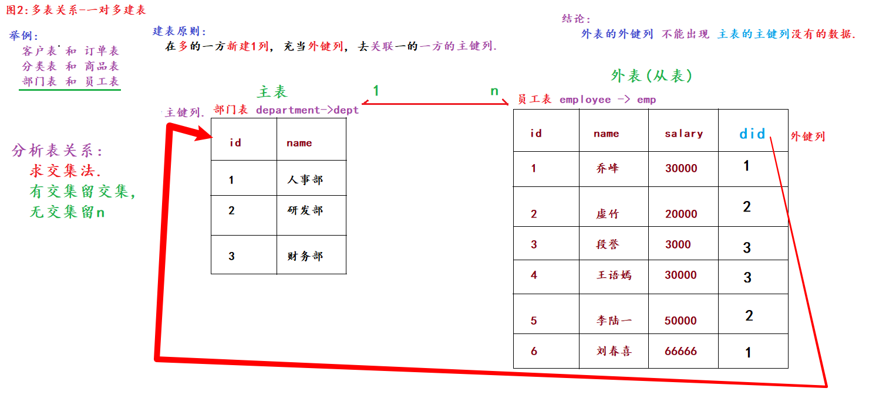
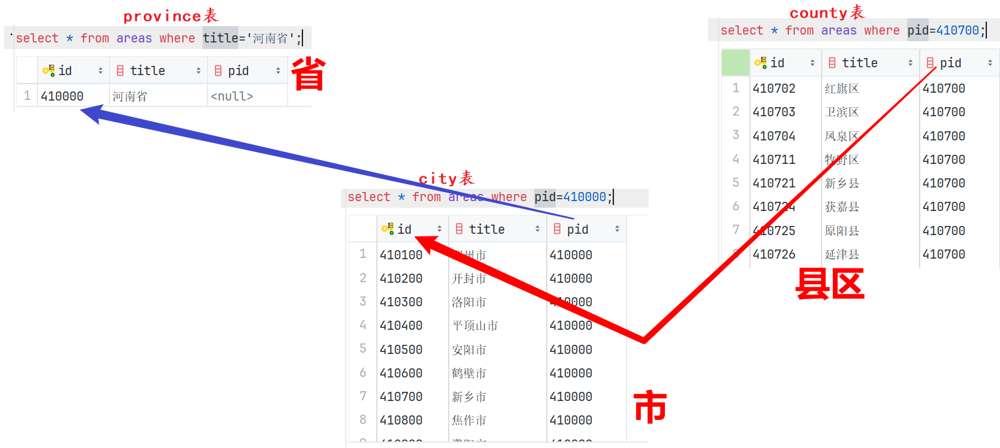

查询（DQL）是 SQL 中使用频率最高、也是数据分析岗位最核心的部分。本讲先把单表查询的七种能力（简单、条件、排序、聚合、分组、去重、分页）逐一吃透，再理解 SQL 的真实执行顺序，最后进入多表世界：表关系设计、外键约束，以及内连接、外连接、子查询与自关联。
本讲承接上一讲《MySQL 基础》。单表部分统一使用一张商品表
product演示，多表部分使用hero/kongfu、dept/emp等示例表，建表语句都在文中给出，可以跟着敲。
一、DQL 概述与查询骨架
单表查询的完整语法骨架如下——先混个脸熟，本讲前半部分就是把每个子句逐一展开：
select [distinct] 列名1 as 别名, 列名2 as 别名, ... from 数据表名 where 组前筛选 group by 分组字段 having 组后筛选 order by 排序字段 [asc | desc] limit 起始索引, 数据条数;
准备演示数据——一张商品表，13 条数据（注意有 2 条商品的分类是 NULL）：
create table product( pid int primary key auto_increment, # 商品id，主键 pname varchar(20), # 商品名 price double, # 商品单价 category_id varchar(32) # 商品的分类id ); insert into product(pid, pname, price, category_id) values (null, '联想', 5000, 'c001'), (null, '海尔', 3000, 'c001'), (null, '雷神', 5000, 'c001'), (null, '杰克琼斯', 800, 'c002'), (null, '真维斯', 200, null), (null, '花花公子', 440, 'c002'), (null, '劲霸', 2000, 'c002'), (null, '香奈儿', 800, 'c003'), (null, '相宜本草', 200, null), (null, '面霸', 5, 'c003'), (null, '好想你枣', 56, 'c004'), (null, '香飘飘奶茶', 1, 'c005'), (null, '海澜之家', 1, 'c002');
二、简单查询
# 需求1：查询所有的商品信息。* 代表表中所有列 select * from product; select pid, pname, price, category_id from product; # 效果同上 # 需求2：只查商品名和价格（指定列查询） select pname, price from product; # 需求3：起别名。列名、表名都可以起别名，as 可以省略 select pname as 商品名, price 商品价格 from product as p; # 需求4：查询结果可以是表达式：把所有商品价格 +10 展示 select pname, price + 10 from product; select pname, price + 10 as price from product;
三个注意点：
- 实际开发中如果只需要某几列，不要图省事用
select *——查所有列会影响查询效率； - 表达式列的典型场景：商品单价 × 数量得到总价；
- 别名如果与关键字冲突（例如叫
desc），要在别名两侧添加反引号`desc`；别名尽量不要和关键字相同。
三、条件查询（WHERE）
格式：select 列名 from 表名 where 条件;——查询每一行时，对 where 后的条件进行判断，满足条件的行才会出现在结果中。条件由五类运算符构成。
1. 比较运算符
=、>、<、>=、<=、!=、<>（后两个都表示不等于），比较结果是成立（True）或不成立（False）。
# 查询商品名为'花花公子'的商品 select * from product where pname = '花花公子'; # 查询价格为800的商品 select * from product where price = 800; # 查询价格不是800的商品（两种写法） select * from product where price != 800; select * from product where price <> 800; # 查询价格大于60的商品 select * from product where price > 60; # 查询价格小于等于800的商品 select * from product where price <= 800;
2. 逻辑运算符
and（并且，两边都成立才成立）、or（或者，任何一边成立即成立）、not（取反），用来连接多个条件。
# 价格在[200, 800]之间：and 连接两个条件 select * from product where price >= 200 and price <= 800; # 价格是200或800 select * from product where price = 200 or price = 800; # 价格不是800 select * from product where not price = 800;
3. 范围查询
between 值1 and 值2：连续区间查询，包左包右；in (值1, 值2, ...)：非连续的固定值查询。
# 价格在200到800之间（等价于 price >= 200 and price <= 800） select * from product where price between 200 and 800; # 价格是200或800（等价于两个 or 条件） select * from product where price in (200, 800); # 价格不是800 select * from product where price not in (800);
4. 模糊查询（LIKE）
字段名 like '匹配模式'，模式中有两个特殊符号：
%：任意多个任意字符（至少 0 个，多少都行）；_：任意一个字符。
# 查询以'香'开头的商品 → 香奈儿、香飘飘奶茶 select * from product where pname like '香%'; # 查询第二个字是'想'的商品 → 好想你枣 select * from product where pname like '_想%'; # 对比：'_想' 只能匹配"?想"两个字的名字，查不出'好想你枣' select * from product where pname like '_想';
5. 空值判断
判断 NULL 一定不能用 = 或 !=，必须用 is null / is not null：
# 错误示范：不报错，但永远没有结果 select * from product where category_id = null; # 查询没有分类的商品（正确的判空写法） select * from product where category_id is null; # 查询有分类的商品 select * from product where category_id is not null;
四、排序查询（ORDER BY）
格式：select * from 表名 order by 字段1 [asc|desc], 字段2 [asc|desc], ...;
asc（ascending）升序、desc(descending) 降序；默认升序，asc 可省略；- 可以按多列排序：前列值相同的行，再按后列的值排序。
# 按价格升序（三种写法等价） select * from product order by price; select * from product order by price asc; # 按价格降序 select * from product order by price desc; # 多列排序：先按价格降序；价格相同的，再按分类降序 select * from product order by price desc, category_id desc; # 排序可以与条件组合：价格高于2000的商品按价格从高到低 select * from product where price > 2000 order by price desc;
五、聚合函数
聚合函数又叫组函数、统计函数，特点是多进一出：对某一列的一组值做统计计算，返回一个结果。常用的有五个：
| 函数 | 作用 | 记忆 |
|---|---|---|
count(列) |
统计某列值的个数（只统计非空值） | count 计数 |
sum(列) |
求和 | sum 总和 |
avg(列) |
求平均值 | average 平均数 |
max(列) |
求最大值 | maximum 最大值 |
min(列) |
求最小值 | minimum 最小值 |
# 需求1：查询商品总条数 select count(*) as total_cnt from product; # 13 select count(category_id) as total_cnt from product; # 11：忽略了2个NULL！ # 需求2：查询价格大于200的商品总条数 select count(pid) as total_cnt from product where price > 200; # 需求3：查询分类为'c001'的商品价格总和 select sum(price) as total_price from product where category_id = 'c001'; # 需求4：查询分类为'c002'的商品平均价格 select avg(price) as avg_price from product where category_id = 'c002'; # 需求5：同时查最大价格和最小价格 select max(price) as max_price, min(price) as min_price from product;
核心细节：聚合函数的计算会忽略 NULL 值。所以统计总行数要用 count(*) 或 count(1)，用普通列（如 count(category_id)）会把空值行漏掉。
面试题：count(*)、count(1)、count(列) 的区别？
- 是否统计空值：
count(列)只统计该列的非空值；count(*)和count(1)统计所有行，包括空值；- 效率排序：
count(主键列) > count(1) > count(*) > count(普通列)。
六、分组查询（GROUP BY 与 HAVING）
1. 先分组，再聚合
分组查询的本质是把表数据"化整为零"：按分组字段的值把行划分成若干组（值相同的行进同一组），再对每一组分别执行聚合运算。

格式：select 列, 聚合函数 from 表名 [where 组前筛选] group by 分组字段 [having 组后筛选];
# 需求1：统计各个分类商品的个数 select category_id, count(*) as total_cnt from product group by category_id; # 需求2：按多字段组合分组——把"分类 + 是否自营"作为整体来分组 # select category_id, is_self, count(id) from product group by category_id, is_self;
2. SELECT 列的限制
分组之后，select 后面查询的字段必须满足两种情况之一：
- 字段是分组字段（在 group by 之后出现过）；
- 字段被聚合函数统计（形如
聚合函数(字段)）。
原因：分组聚合执行后每组只产生一行结果，如果 select 一个"组内值不统一"的普通字段，数据库不知道该拿组里哪一行的值——有歧义，所以报错。
另一个推论：只分组、不写聚合，效果等价于按分组字段去重：
select category_id from product group by category_id; # 与 distinct 等价 select distinct category_id from product;
3. HAVING：组后筛选
对分组聚合之后的结果再过滤，用 having：
# 需求：统计各分类商品个数，只显示个数大于1的分类 select category_id, count(*) as total_cnt from product group by category_id # 按商品分类分组 having total_cnt > 1; # 组后筛选：对聚合结果过滤
注意：MySQL 中 having 可以直接使用聚合结果的别名（如上例的 total_cnt），这是 MySQL 的扩展特性，其他数据库不保证支持——通用写法是 having count(*) > 1。
4. 面试题：WHERE 和 HAVING 的区别
| 对比项 | where | having |
|---|---|---|
| 过滤时机 | 组前筛选（分组之前过滤行） | 组后筛选（对分组聚合的结果过滤） |
| 能否用聚合函数 | 不能 | 可以 |
| 执行顺序 | where → group by → 聚合 → having | 同左 |
七、去重查询（DISTINCT）
distinct 对查询结果中重复的行进行去重：
# 对分类id去重 select distinct category_id from product; # 多列时：把(category_id, price)作为整体去重，两列都相同才算重复 select distinct category_id, price from product; # 等价的分组写法 select category_id, price from product group by category_id, price;
注意：distinct 针对的是查询结果的整行内容，不是单个字段——它写在 select 之后对所有查询列生效。
八、分页查询（LIMIT）
1. 语法与参数计算
分页查询每次只从表中取固定条数的数据：既能降低服务器和浏览器的压力，又能提升用户体验，实际开发中非常常用。
格式：limit 起始索引, 数据条数;（即 limit M, N：从索引 M 开始取 N 条，也就是从第 M+1 行开始）
- 表中每条数据都有自己的索引，从 0 开始；
- 从索引 0 开始取时，
0,可以省略：limit 5等价limit 0, 5； - 当 limit 的范围不存在（越界）时不报错，只是没有结果。
分页的四个参数记住计算规则即可：
| 参数 | 来源 / 公式 |
|---|---|
| 数据总条数 | count() 函数统计 |
| 每页条数 | 产品经理 / 项目经理 / 你自己定 |
| 每页起始索引 | (当前页数 - 1) × 每页条数 |
| 总页数 | (总条数 + 每页条数 - 1) // 每页条数（整除） |
例如每页 5 条：13、14、15 条数据都是 3 页，16 条就是 4 页——(16 + 5 - 1) // 5 = 4。
# 每页5条 select * from product limit 5; # 第1页：从索引0开始取5条（0可省略） select * from product limit 0, 5; # 第1页，效果同上 select * from product limit 5, 5; # 第2页：从索引5开始取5条 # 每页3条 select * from product limit 0, 3; # 第1页 select * from product limit 3, 3; # 第2页 select * from product limit 6, 3; # 第3页 select * from product limit 9, 3; # 第4页 select * from product limit 12, 3; # 第5页（只剩1条也正常返回）
2. ORDER BY + LIMIT 求 Top-N
排序和分页组合，是"求最值所在行"的常用套路：
# 价格最高的商品（假定最高价只有一个） select * from product order by price desc limit 1; # 价格次高（第二高）的商品：跳过1条取1条 select * from product order by price desc limit 1, 1;
3. 单表查询综合案例
把所有子句串起来——统计每类商品的单价总和，只统计单价 100 以上的商品，只看总和 500 以上的分类，按总价降序，取前 2 名：
select category_id, sum(price) as total_price from product where # 组前筛选：先滤掉单价<=100的行 price > 100 group by # 分组 category_id having # 组后筛选：对每组的聚合结果过滤 total_price > 500 order by # 排序 total_price desc limit 0, 2; # 分页：取前2条
九、SQL 语句的执行顺序
初学者常疑惑："我写的 SQL 看着没问题，为什么执行报错？"多数原因是：SQL 的书写顺序和执行顺序不一样。
书写顺序：select → from → where → group by → having → order by → limit
实际执行顺序：
from（+ join/on 确定数据来源） → where（组前筛选行） → group by（分组） → 聚合函数（对每组统计） → having（组后筛选） → select（取出/计算查询列） → distinct（去重） → order by（排序） → limit（截取行数）
每一步都基于上一步的结果继续操作。理解了这个顺序，很多"为什么报错"都能自己解释：
- where 里不能用聚合函数——where 执行时还没分组，聚合根本没发生；
- 分组后 select 普通字段报错——分组聚合先执行，每组只剩一行，再取组内不统一的字段有歧义；
- MySQL 中 having / order by 能用 select 的别名，是 MySQL 对执行细节做的扩展，别的数据库不保证。
十、表与表的关系
实际项目通常需要很多张表配合，表与表之间存在三种关系。假设有 A、B 两张表：
| 关系 | 含义 | 举例 | 建表原则 |
|---|---|---|---|
| 一对多 | A 表一行对应 B 表多行；B 表一行只对应 A 表一行 | 部门和员工、客户和订单、分类和商品 | 在"多"的一方新建一列作外键列，关联"一"的一方的主键列 |
| 多对多 | A 表一行对应 B 表多行；B 表一行也对应 A 表多行 | 学生和课程（选课）、订单和商品 | 新建中间表，至少 3 列：自身主键 + 两个外键，分别关联两方的主键 |
| 一对一 | A 表一行对应 B 表一行 | 人和身份证号、公司和注册地址 | 直接放到一张表中即可 |
一对多是最常见的关系，用部门表（主表）和员工表（从表）看建表方式：

# 1. 部门表：一的一方（主表） create table dept( id int primary key auto_increment, # 部门id name varchar(10) # 部门名字 ); # 2. 员工表：多的一方（从表），新建 dept_id 列充当外键列 create table emp( id int primary key auto_increment, # 员工id name varchar(10), # 员工姓名 salary int, # 员工工资 dept_id int # 员工所属的部门id（外键列） ); insert into dept values(null, '人事部'), (null, '研发部'), (null, '财务部'); insert into emp values (null, '乔峰', 30000, 1), (null, '虚竹', 20000, 2), (null, '段誉', 3000, 3);
核心结论：从表的外键列，不能出现主表主键列没有的数据——员工的 dept_id=10，但部门表里没有 id 为 10 的部门，这就是"脏数据"。
十一、外键约束（FOREIGN KEY）
1. 概念与作用
假设 B 表的某列引用了 A 表的主键列的值，则 B 表的这一列称为 B 表的外键列；被引用的 A 表叫主表，B 表叫从表。在从表的外键列上可以添加外键约束，它的作用有两个：
- 保证插入数据的准确性：从表外键的值，必须在主表主键中存在，否则插入失败；
- 保证删除数据的完整性：主表的主键值被从表引用后，主表中对应的记录不能被直接删除。
2. 设置与删除
# 方式1：建表时直接添加外键约束（可以顺便命名） create table emp( id int primary key auto_increment, name varchar(10), salary int, dept_id int, constraint fk_dept_emp foreign key(dept_id) references dept(id) # 不命名的简写: foreign key(dept_id) references dept(id) ); # 方式2：建表后追加外键约束 # 格式: alter table 从表名 add [constraint 约束名] foreign key(外键列) references 主表名(主键列); alter table emp add constraint fk_01 foreign key(dept_id) references dept(id); # 有了外键约束后，插入脏数据会直接报错（部门表没有id=10的部门） insert into emp values(null, '喜哥', 66666, 10); # 删除外键约束 # 格式: alter table 从表名 drop foreign key 外键约束名; alter table emp drop foreign key fk_01; # 建表时没命名的约束，MySQL 会自动起名（如 emp_ibfk_1），可以先查看再删除 show create table emp; alter table emp drop foreign key emp_ibfk_1;
3. 外键约束的取舍
外键约束并非只有好处：
- 过分依赖外键会增加开发难度（增删数据要考虑先后顺序）；
- 外键检查会降低增删改的性能。
所以实际开发中很少使用外键约束，更多是"逻辑外键"：表结构上保留外键列表达关系，由程序员在代码层面保证插入的准确性和删除的完整性。
十二、多表查询总览与笛卡尔积
多表查询的精髓：根据关联条件和组合方式，把多张表拼成一张表，然后进行单表查询。
准备两张演示表——英雄表和功夫表（注意各有匹配不上对方的数据）：
create table hero( hid int primary key auto_increment, # 英雄id hname varchar(255), # 英雄名 kongfu_id int # 功夫id ); create table kongfu( kid int primary key auto_increment, # 功夫id kname varchar(255) # 功夫名 ); insert into hero values(1, '鸠摩智', 9), (3, '乔峰', 1), (4, '虚竹', 4), (5, '段誉', 12); insert into kongfu values(1, '降龙十八掌'), (2, '乾坤大挪移'), (3, '猴子偷桃'), (4, '天山折梅手'), (9, '龙象般若功');
交叉连接（笛卡尔积）：也叫无条件连接——左表每一行无差别地和右表每一行分别组合：
# 两种写法等价，结果行数 = 左表行数 × 右表行数 = 4 × 5 = 20行 select * from hero, kongfu; select * from hero join kongfu;
笛卡尔积一般不直接使用，原因有二：
- 结果行数可能非常恐怖：两张各 1 万行的表做笛卡尔积，结果是 1 万 × 1 万 = 1 亿行；
- 结果中大量"乱点鸳鸯谱"的组合并不满足关联需求（乔峰配上了不会的功夫）。
所以实际使用的是有条件连接：连接时跟上一个关联条件，满足条件的行才组合。有条件连接分为 4 种：内连接、左连接、右连接、全连接。
十三、内连接（INNER JOIN）
内连接返回两张表都满足连接条件的部分（交集）：左右两表关联时，满足关联条件的数据才会出现在结果中。
# 格式1：显式内连接（推荐） select * from 表A inner join 表B on 关联条件; select * from hero h inner join kongfu kf on h.kongfu_id = kf.kid; select * from hero h join kongfu kf on h.kongfu_id = kf.kid; # inner 可省略 select * from hero join kongfu on kongfu_id = kid; # 两表没有重名字段时，可省略"表名."前缀 # 格式2：隐式内连接 select * from 表A, 表B where 关联条件; select * from hero h, kongfu kf where h.kongfu_id = kf.kid;
查询结果（段誉的功夫 id=12 两表匹配不上，猴子偷桃、乾坤大挪移没人会，都不出现）：
| hid | hname | kongfu_id | kid | kname |
|---|---|---|---|---|
| 1 | 鸠摩智 | 9 | 9 | 龙象般若功 |
| 3 | 乔峰 | 1 | 1 | 降龙十八掌 |
| 4 | 虚竹 | 4 | 4 | 天山折梅手 |
十四、左外连接与右外连接
左外连接（left outer join，简写 left join）：结果 = 左表全集 + 交集。除了满足条件的数据，左表中关联不上右表的行也会保留，右表侧自动填充 NULL：
select * from hero h left outer join kongfu kf on h.kongfu_id = kf.kid; select * from hero left join kongfu on kongfu_id = kid; # 简化版写法
| hid | hname | kongfu_id | kid | kname |
|---|---|---|---|---|
| 1 | 鸠摩智 | 9 | 9 | 龙象般若功 |
| 3 | 乔峰 | 1 | 1 | 降龙十八掌 |
| 4 | 虚竹 | 4 | 4 | 天山折梅手 |
| 5 | 段誉 | 12 | NULL | NULL |
右外连接（right outer join，简写 right join）：结果 = 右表全集 + 交集，右表中关联不上左表的行保留，左表侧填 NULL：
select * from hero h right outer join kongfu kf on h.kongfu_id = kf.kid; select * from hero right join kongfu on kongfu_id = kid; # 简化版写法
| hid | hname | kongfu_id | kid | kname |
|---|---|---|---|---|
| 3 | 乔峰 | 1 | 1 | 降龙十八掌 |
| NULL | NULL | NULL | 2 | 乾坤大挪移 |
| NULL | NULL | NULL | 3 | 猴子偷桃 |
| 4 | 虚竹 | 4 | 4 | 天山折梅手 |
| 1 | 鸠摩智 | 9 | 9 | 龙象般若功 |
结论：交换两张表的顺序后，左外连接和右外连接可以得到一样的结果——A right join B 等价于 B left join A。掌握一种即可，推荐统一用左外连接。
十五、全连接与 UNION
全连接（full outer join）：结果 = 左表全集 + 交集 + 右表全集，两边关联不上的数据都保留，对应侧填 NULL。
注意：MySQL 不支持 FULL JOIN 关键字，需要用 union 把左连接和右连接的结果合并来模拟：
# 全连接 = 左连接 UNION 右连接 select * from hero left join kongfu on kongfu_id = kid union select * from hero right join kongfu on kongfu_id = kid;
结果共 6 行：交集 3 行 + 段誉（右侧 NULL）+ 乾坤大挪移、猴子偷桃（左侧 NULL）。
union 与 union all 的区别：
union：合并两个查询结果并去重（所以上面交集部分不会出现两次）；union all：直接拼接，不去重——用它模拟全连接时交集行会重复出现。
十六、七种 JOIN 查询模式速查
结合"两个圆的交并集"来记，常见的连接查询共有七种形态：
| # | 需求 | 写法要点 |
|---|---|---|
| 1 | 交集（两表都匹配） | A join B on 条件 |
| 2 | 左表全集 + 交集 | A left join B on 条件 |
| 3 | 左表独有（去掉交集） | A left join B on 条件 where B.key is null |
| 4 | 右表全集 + 交集 | A right join B on 条件 |
| 5 | 右表独有（去掉交集） | A right join B on 条件 where A.key is null |
| 6 | 全集（全连接） | 左连接 union 右连接 |
| 7 | 两表独有（全集去掉交集） | 模式3 union 模式5 |
十七、子查询
如果一个查询的查询条件需要依赖另一个 SQL 的查询结果，就把里面的查询嵌进去，这种写法称为子查询：里边的查询叫子查询，外边的叫父查询（主查询）。
需求：查询所有单价高于平均价的商品。分解着写是两步：
# step1: 先查所有商品的均价（顺便认识 round(x, n)：四舍五入保留n位小数） select round(avg(price), 3) as avg_price from product; # 1346.385 # step2: 把上一步的结果代入条件 select * from product where price > 1346.385;
子查询一步到位——把 step1 整个作为条件的右值：
# 父查询(主查询) 子查询 select * from product where price > (select avg(price) from product);
十八、自关联查询
表自己和自己做关联查询，称为自关联（自连接）查询，写法上可以是交叉、内连接、外连接——关键是给同一张表起不同的别名，把它当成两张表用。
经典案例是行政区域表（省市区）：如果为省、市、区分别建三张表，结构重复且层级写死；更优雅的做法是一张表存所有层级，用 pid（父级 id）字段表达上下级关系：
| id（自身编号） | title（自身名字） | pid（父级编号） |
|---|---|---|
| 410000 | 河南省 | 0 |
| 410100 | 郑州市 | 410000 |
| 410700 | 新乡市 | 410000 |
| 410101 | 二七区 | 410100 |
| 410721 | 新乡县 | 410700 |

# 1. 查询河南省的信息 select * from areas where title = '河南省'; # 2. 查询河南省所有的市（父级id = 河南省的id） select * from areas where pid = 410000; # 3. 查询新乡市所有的县区 select * from areas where pid = 410700; # 4. 一条SQL查出河南省所有的市、县区：同一张表起3个别名，连接2次 select province.id, province.title, # 省的id、名字 city.id, city.title, # 市的id、名字 county.id, county.title # 县区的id、名字 from areas as county # 县区 join areas as city on county.pid = city.id # 市 join areas as province on city.pid = province.id # 省 where province.title = '河南省'; # 5. 趣味应用：根据身份证号前6位查自己的家乡 select province.title, city.title, county.title from areas as county join areas as city on county.pid = city.id join areas as province on city.pid = province.id where county.id = '142222'; # 换成你身份证的前6位
十九、本讲小结
| 主题 | 关键点 |
|---|---|
| 查询骨架 | select … from … where … group by … having … order by … limit … |
| 条件查询 | 比较、逻辑（and/or/not）、between…and（包左包右）、in、like（% 多 _ 一）、is null |
| 聚合函数 | count/sum/avg/max/min，忽略 NULL；count(*) 统计所有行 |
| 分组 | 先分组再聚合；select 只能查分组字段或聚合结果；where 组前 having 组后 |
| 去重与分页 | distinct 整行去重；limit M,N 起始索引 = (页数-1)×每页条数 |
| 执行顺序 | from → where → group by → 聚合 → having → select → distinct → order by → limit |
| 表关系 | 一对多（多方加外键列）、多对多（中间表）、一对一（合一张表） |
| 外键约束 | 保证插入准确、删除完整；实际开发多用逻辑外键，代码层维护 |
| 连接查询 | 内连接=交集；左/右外连接=单侧全集+交集；MySQL 无 FULL JOIN，用 union 模拟 |
| 子查询与自关联 | 查询条件依赖另一个查询的结果；同一张表起多个别名连接自身 |
一句话总纲：多表查询 = 先按关联条件把多张表拼成一张表，再套用单表查询的全部功力。